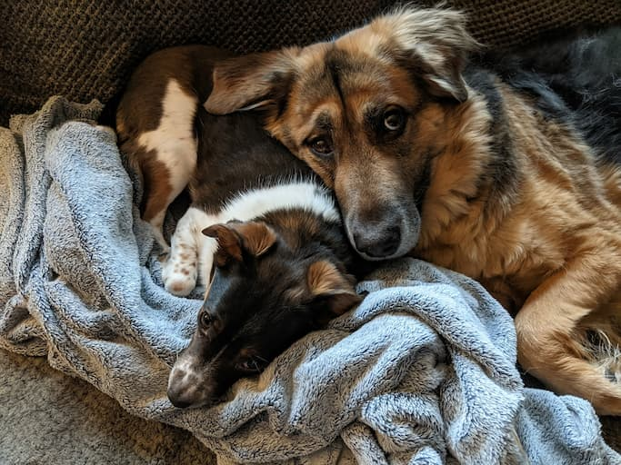

Hello, my name is Shannon. My home is in North Versailles, a suburb of Pittsburgh, PA. I live with my lovely husband, Ron, and our two dogs, Finnegan and Bugsy (picture below). I'm rather introverted, so you're more likely to find me tucked away in a comfy corner reading a book than out and about "on the town."
I have primarily held editorial and production positions for publishing services in my career thus far. I am very passionate about the written word, and I have found great satisfaction working so closely with it in this field.
I just recently started a new job working as an editor for Pearson. Pearson is the largest education company in the world, and I'm very excited to be a part of their editorial team. I edit testing materials for state contracts covering all subjects/all grades K-12. They have brought me on for a 2-year limited term employment, with the possibility of being brought on as a regular employee at the end of the term. So staying on with the company at the end of this term is my main career goal at the moment.
After that, I'd like to become more involved in the work they do to accommodate their content for students with disadvantages. This content is intended for ELL students, students with disabilities, and students with physical or mental impairments. I hope to specialize in this area of educational content and would someday like to lead a hybrid team dedicated exclusively to the development, production, and promotion of these offerings.
Find me on LinkedIn to learn more about my career history.